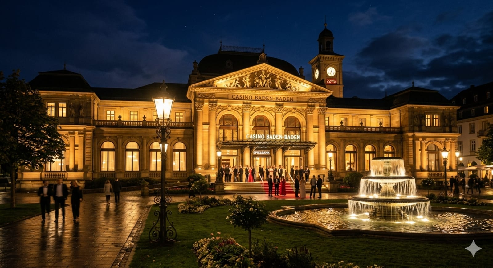
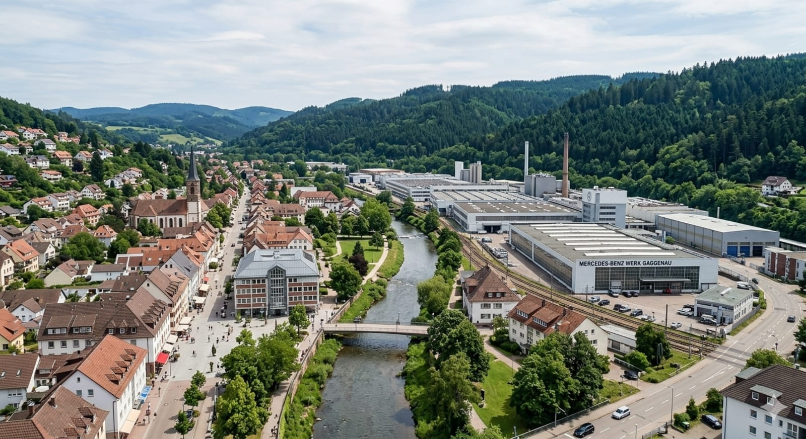

Automatizare completă
Agentul publică acum live în blog și primește un strat nou de selecție, verificare și optimizare.
În patch-ul acesta intră baza pentru orchestratorul Agent Zero și cei 7 agenți auxiliari: Topic Selector, Duplicate Checker, Writer, Local Adaptation, GEO Optimization, Internal Linking și Lead Conversion.
Orașe active
4
Rastatt, Baden-Baden, Gaggenau, Karlsruhe
Agenți planificați
8
Agent Zero + 7 agenți specializați pentru SEO, GEO și lead-uri
Oraș + background corect
Rastatt

Baden-Baden
GaggenauKarlsruhe
Fișiere cheie
agent/config/cities.json
Mapare oraș → pagină → imagine background
Mapare oraș → pagină → imagine background
agent/config/services.json
Servicii și șabloane de topicuri
Servicii și șabloane de topicuri
agent/config/goals.json
Obiective business: lead-uri, local pages, SEO și GEO
Obiective business: lead-uri, local pages, SEO și GEO
agent/prompts/*.md
Prompts separate pentru fiecare agent din stack
Prompts separate pentru fiecare agent din stack
agent/scripts/run-agent-zero.mjs
Orchestrator logic pentru topic → duplicate → writer → optimizare
Orchestrator logic pentru topic → duplicate → writer → optimizare
netlify/functions/pss-auto-content.mjs
Endpoint Netlify pregătit pentru generare + commit în GitHub
Endpoint Netlify pregătit pentru generare + commit în GitHub
Stack nou de agenți
Agent Zero / OrchestratorPornește fluxul, validează inputul, ține limita zilnică și decide dacă publică sau oprește.
Topic SelectorAlege subiectele cu intenție comercială și le mapează spre pagina de serviciu sau pagina locală potrivită.
Duplicate CheckerBlochează canibalizarea, decide create / update / merge / reject pe baza slugurilor și a intenției.
SEO + GEO WriterScrie meta, slug, H1, structură H2/H3, costuri, proces, beneficii, FAQ și CTA.
Local AdaptationTransformă conținutul bun în variantă locală pentru Rastatt, Baden-Baden, Gaggenau sau Karlsruhe.
GEO OptimizationRescrie pasajele ca să fie citabile, directe și ușor de extras de AI search.
Internal LinkingDecide links in / links out și anchor texturile care susțin pagina nouă.
Lead ConversionPune CTA-ul bun sus, la mijloc și jos, plus intrarea către WhatsApp și Preisrechner.
Workflow nou
Agent Zero citește orașele, serviciile, obiectivele și indexul actual de conținut.
Topic Selector propune topicuri cu keyword principal, secundar, prioritate și format recomandat.
Duplicate Checker decide create new / update existing / merge with existing / reject.
Writer produce draftul principal, apoi Local Adaptation și GEO Optimization îl rafinează.
Internal Linking și Lead Conversion completează interlinking-ul și CTA-urile înainte de publish.
Variabile necesare pentru live
OPENAI_API_KEY=
GITHUB_OWNER=
GITHUB_REPO=
GITHUB_TOKEN=
NETLIFY_SITE_URL=
AUTO_DAILY_LIMIT=10
Motorul publică acum în /blog/. Agenții noi sunt baza pentru filtrare și optimizare înainte de publish.